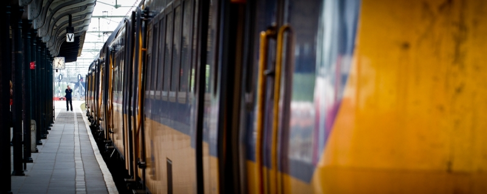

eten op rolletjes
Beweging
Reizen
Toegankelijkheid
Voorzieningen

Reizen
Reizen met de trein
Hoe worden treinen toegankelijk gemaakt
Openen
Reizen met de bus
Hoe worden bussen toegankelijk gemaakt
Openen
Reizen met de tram
Hoe worden trams toegankelijk gemaakt
Openen
Reizen met de metro
Hoe worden metro's toegankelijk gemaakt
Openen